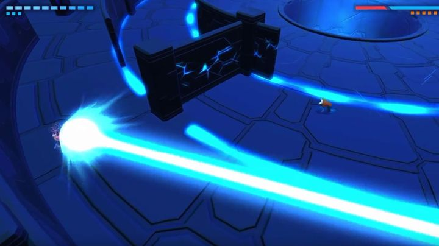
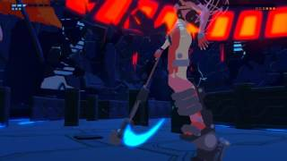
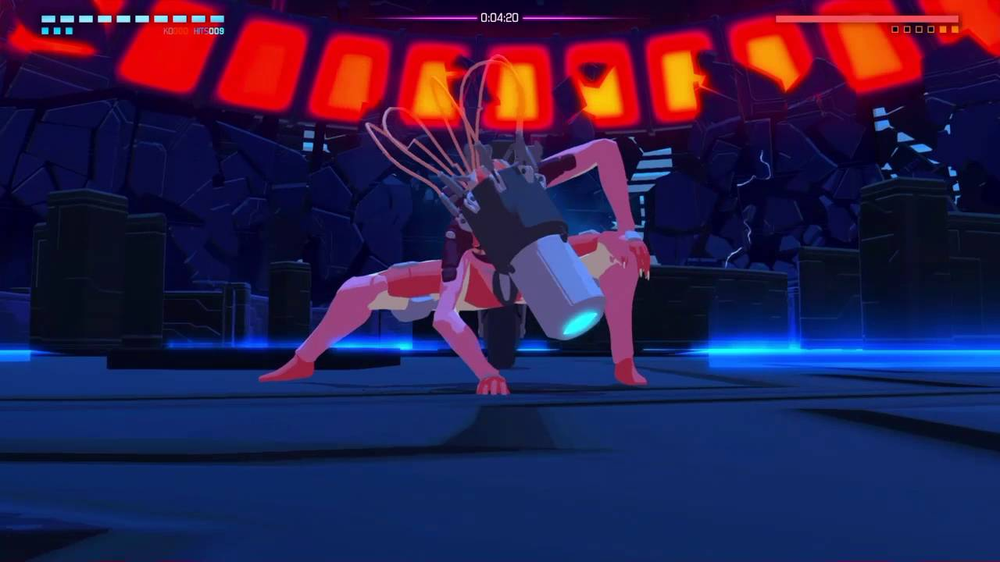
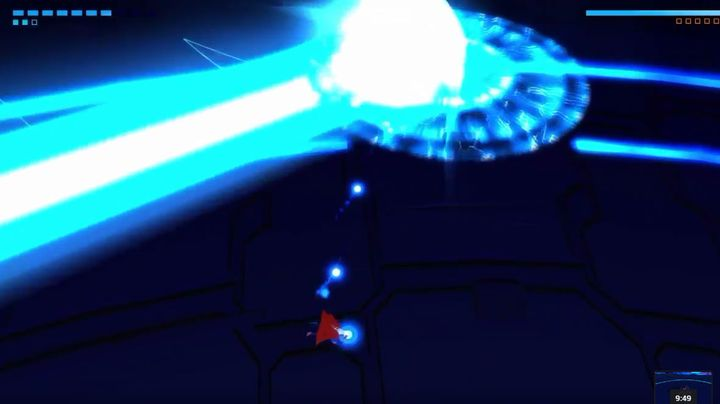

This boss is going to take a while to explain so make sure to take some notes.The Strap, just like you, was captured and placed in a cell.She teared at the walls until she realized that she was trapped which essentially drove her insane. After not being Now let’s move onto her design. The strap has a very fitting design as she is supposed to be an assylum prisoner and the fact that she goes more and more insane as the fight goes on is a nice touch. Now the gimmick for this fight is moving and abusing the enviroment. This fight takes place in a ring shaped arena with a maze of walls around the center. You are able to destroy the walls if you need to so don’t worry about them getting in the way. Now the most important thing in the arena are the panels on the pillars and floors. When stepped on or shot The Strap will run over to the panel she will go temporarily insane and smack the panel a few times,this will allow you to get a few shots in. Now The Strap mainly uses unblockable and homing purple projectiles(And no I am not joking when I say this).It’s a good strategy to use the walls to block some of her lasers and homing shots but they can destroy the walls so don't depend on them to much during the fight.Her most basic attack is her giant blue laser.
During her first two phases she is strapped to her segway so she uses her projectiles mainly and her melee attacks are easily parried. Just make sure to dodge through her attacks not around them.Now during the third and fourth phases she frees her arms and now has access to her scythe.
She is also able to use purple shots now so remember to keeps moving as they have homing. Her melee strings are longer now and she moves more fluidly in the duel phase as well so be careful that you are not getting greedy. In her final two phases she breaks out of her segway.
She now moves around the map faster altough she dosen’t use her scythe anymore so her melee strings aren’t as long so that’s good. Now during the phase she will run off and disapear. She will later reapear and attempt to grab you. She’s invincible when she comes out of stealth and runs after you,so the best course of action is to use a pannel when she comes out of stealth. She will also now try to jump you during duel phase so keep on dodging when she prepares to do that. Now during her final phase she enters desperation mode. This is an important mechanic so make sure to remember what I am about to say. During this mode the boss will launch a large amount of projectiles at you, change the arena or power up. During most desperation attacks the boss is invincible until the end of the attack. The boss can only be finsished off by a melee attack so make sure to engage as soon as the attack ends. Now, make sure to shoot the normal bullets out of the air as trying to dodge them all is pratically impossible. After she shoots a bunch of bullets, she will start to sweep a giant laser across the arena which gets increasingly faster.
Just dodge the lasers and you’ll be fine. Once you finish the range phase desperation she will go into duel phase desperation mode.She will begin shooting lasers rapid fire so whatever you do,don’t stop dodging. Remeber this and you’ll be fine.